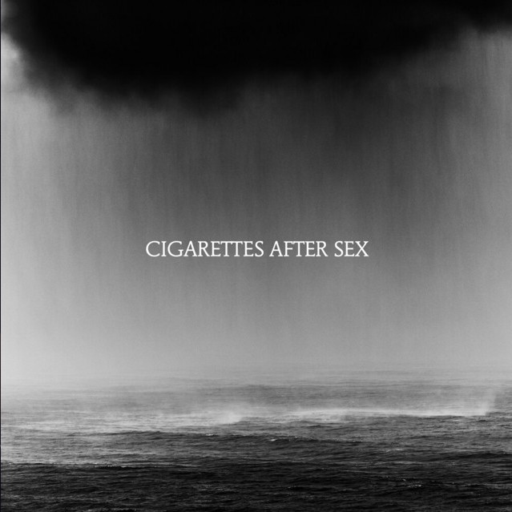
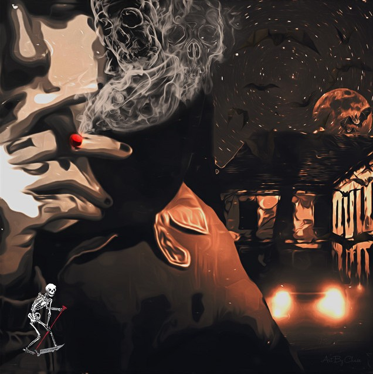
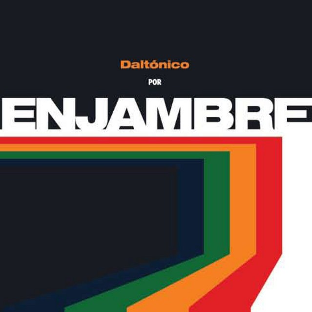

Falling In Love
Cigarettes After Sex
Una de esas canciones que tienen una sensación que simplemente me hace pensar en ti.
Escuchar en Spotify ♫Hay canciones que solamente son canciones. Y hay otras que, después de conocer a alguien, comienzan a significar muchísimo más. Algunas me recuerdan a ti. Otras me recuerdan a nosotros.

Cigarettes After Sex
Una de esas canciones que tienen una sensación que simplemente me hace pensar en ti.
Escuchar en Spotify ♫
Lil Peep
Porque si pudiera darte algo tan grande como la luna, probablemente también te la daría a ti.
Escuchar en Spotify ♫
Enjambre
Una canción que se queda con nosotros de una manera diferente, como esos pequeños momentos que quiero conservar.
Escuchar en Spotify ♫“Si algún día escuchas una canción y piensas en mí, entonces ya valió la pena encontrarla.”
Para mi ranita 🐸Pero entre todas estas canciones, hay algo que quiero que nunca olvides...
Descubrir las razones →